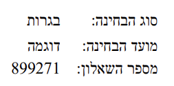
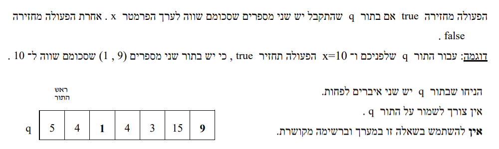
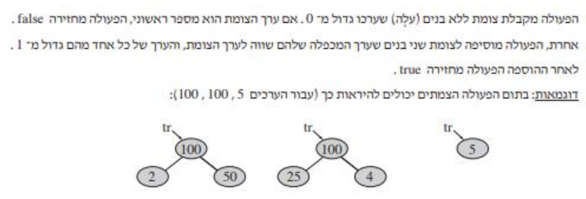
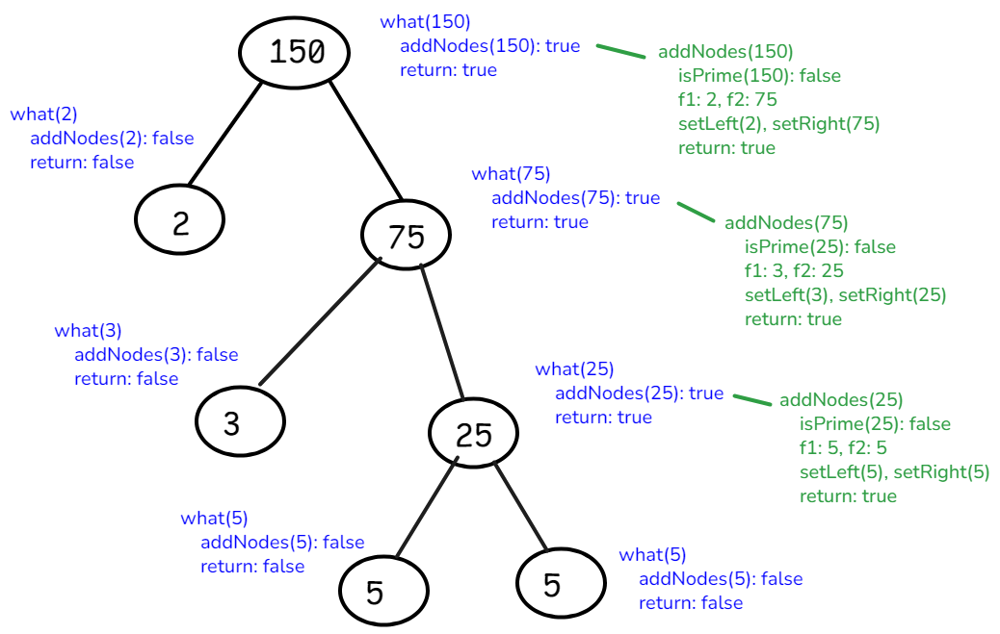
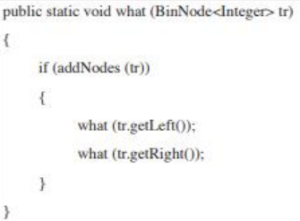

<meta charset="utf-8" />
<style> hint, drill {display: none;} </style>
<script src="../md-components.js"></script>

<import-hints from="./bagrut-hints.html"></import-hints>

<!---------------------------------------------------------->

<code-drills 
    heading="demo-271"
    log-level="W"
>
</code-drills>

<template>

<!---------------------------------------------------------->

<drill lang="java" id="2025-271" as-html>
<a href="./pdf/demo-271.pdf" target="_blank">
    
</a>
<a href="./pdf/demo-271.pdf" target="_blank" class="link link-primary ml-6">
    <div dir="rtl" style="float:left;">בגרות demo</div>
</a>
<a href="./pdf/demo-271-slides.pdf" target="_blank" class="link link-primary ml-6">
    שקופיות להדפסה
</a>
<!--video-list width=380 height=200 list="[
    ['https://youtu.be/', 'Q-1'],
]">
</video-list-->
</drill>

<!---------------------------------------------------------->

<drill lang="java" id="len()">
-// מקבלת תור של מספרים (אפשר לשנות לטיפוס הרצוי)   {1}
-// מחזירה כמות האיברים בתור, התור נשמאר            {1}
public static int $len$(Queue&lt;Integer> q) {
        ~g ht its-a-helper      {1}
    $Queue&lt;Integer> $$tmp$ = new Queue&lt;Integer>();
        ^$
        ~r ht type-is-missing
    $int $$count$ = 0;
        ^$
        ~r ht type-is-missing
    while (!q.isEmpty()) {
        count++;
        tmp.insert(q.remove());
    }
-    while (!tmp.isEmpty()) {       {2}
-        q.insert(tmp.remove());    {2}
-    }                              {2}
    return count;
$} $                                {2}
    ~r ht que-is-destroyed
</drill>


<!---------------------------------------------------------->

<drill lang="java" id="at()">
-// מקבלת תור של מספרים (אפשר לשנות לטיפוס הרצוי) ומיקום    {1}
-// מחזירה איבר במיקום הנדרש, התור נשמאר    {1}
-// מניחה שמיקום תקין ונמצא בתור    {1}
public static int $at$(Queue&lt;Integer> q, int indx) {
        ~g ht its-a-helper      {1}
    Queue&lt;Integer> tmp = new Queue&lt;Integer>();
-    int x = 0;                 {2}
    while (!q.isEmpty()) {
        if (indx == 0) {
            $$x = q.head();     {2}
                ^int $ ~t
        }
        indx--;
        tmp.insert(q.remove());
    }
-    while (!tmp.isEmpty()) {           {3}
-        q.insert(tmp.remove());        {3}
-    }                                  {3}
    return $x$;                 {2}
        ~r hr local-var
$} $                                    {3}
    ~r ht que-is-destroyed
</drill>


<!---------------------------------------------------------->

<drill lang="java" id="twoSum()">
$!html <br>
public static boolean twoSum(int[] a, int x) {
    for (int i = 0; i < a.length; i++) {
        for (int j = i+1; j < a.length; j++) {
            if (a[i] + a[j] == x) {
                return true;
            }
        }
    }
    return false;
}
// Runtime complexity: $`O(n^2)`$
    ^? ~g ht result

public static boolean twoSum($Queue&lt;Integer> q$, int x) {   {1}
        ^int[] a ~g
    for (int i = 0; i < $len(q)$; i++) {                    {1}
            ^a.lenght ~g
        for (int j = i+1; j < $len(q)$; j++) {              {1}
                ^a.lenght ~g
            if ($at(q,i)$ + $at(q,j)$ == x) {               {1}
                    ^a[i] ~g
                    ^a[j] ~g
                return true;
            }
        }
    }
    return false;
}
// Runtime complexity: $`O(n^3)`$                           {1}
    ^`O(n^3)` ~t ~m
</drill>

<!---------------------------------------------------------->

<drill lang="java" id="NumCount()">
class NumCount {
    private int num;
    private int count;
    
    public int getNum() { return $this.$$num$; }
        ^$
        ~o ht better-with-this
    public int getCount() { return $this.$$count$; }
        ^$
        ~o ht better-with-this
    public int setNum(int num) { $this.$$num$ = num; }
        ^$
        ~r ht must-be-with-this

    public NumCount(int num) {
        this.num = num;
        this.count = $1;$
            ^... ~o ht implement
    }
}

// <bdo dir="rtl">...פונקצית עזר... מה מקבלת ומה מחזירה</bdo>
public static Node&lt;NumCount> find(Node&lt;NumCount> lst, int x) {
    while (lst != null) {
        if (lst.$getValue()$$.getNum()$ == x) {
                ~r ht is-it-num
                ^$
            return lst;
        }
-        lst = lst.getNext();       {1}
    $} $                            {1}
        ~r ht endless-loop
    return null;
}
</drill>

<!---------------------------------------------------------->

<drill lang="java" id="insertOrdered()">
class NumCount {
    private int num;
    private int count;
    
    public int getNum() { return this.num; }
}

// <bdo dir="rtl">...פונקצית עזר... מה מקבלת ומה מחזירה</bdo>
public static Node&lt;NumCount> insertOrdered(
        Node&lt;NumCount> lst, 
        Node&lt;NumCount> node)
{
-    if (lst == null) {                         {1}
-        return node;                           {1}
-    }                                          {1}
    int num = node.$getValue().$$getNum()$;
        ^$
        ~r ht node-as-value
    if (num < $lst$.$getValue().$$getNum()$)
                ~r ht list-can-be-empty         {1}!
                ^$ ~t                           {+}
                ~r ht node-as-value
            node.setNext$($lst$)$;
                ^ == $
                ^$
            return node;
    }
    Node<NumCount> cur = lst;
    while (cur.hasNext() && 
           cur.getNext().$getValue().$$getNum()$ < num)
            ^$
            ~r ht node-as-value
    {
        cur = cur.getNext();
    }

    node.$setNext($cur.getNext()$)$;
        ^next = $ ~r ht member-access
        ^$
    cur.$setNext($node$)$;
        ^next = $ ~r ht member-access
        ^$

    return $lst$;
        ^cur ~r ht wrong-logic
}
</drill>

<!---------------------------------------------------------->

<drill lang="java" id="insertNum()!">
class OrderedList {
    private Node&lt;NumCount> lst;

    public OrderedList() {
-        this.lst = null;    // אומרים בפירוש שרשימה ריקה       {1}
+       $...$                           {1}
            ~o hr implement
    }

    public $void $$insertNum$(int x) {
            ^$
            ~r ht missing-ret-type
        Node&lt;NumCount> node = find(this.lst, x);
        if (node != null) {
            int count = node$.getValue()$.$getCount()$;
                ^$
                ~r ht number-or-object
            node.getValue().$setCount$$($count + 1$)$;
                ^count ~r ht cant-access-private
                ^ == $
                ^$
        } else {
            node = new Node<NumCount>($new NumCount($$x$$)$);
                ^$
                ~r ht number-or-object
                ^$
            $this.lst = $$insertOrdered(this.lst, node);$
                ^$
                ~r ht new-head
        }
    }
}
</drill>

<!---------------------------------------------------------->

<drill lang="java" id="valueN()">
class OrderedList {
    private Node&lt;NumCount> lst;

    public $$int $valueN$(int num) {
            ^static $
            ~r ht internal-func
-        Node<NumCount> node = this.lst;        {1}
        int indx = 0;
        while ($node$ != null) {
                ^lst ~r ht wrong-logic          {1}
            int count = $node$.getValue().getCount();
                ^lst ~r ht wrong-logic          {1}
            if (indx + count >= num) {
                return $node$.getValue().$getNum()$;
                    ^lst ~r ht wrong-logic      {1}
                    ^getCount() ~r ht wrong-logic       {2}
            }
            indx += $count;$
                ^... ~o ht implement
            $node$ = $node$.getNext();          {1}
                ^lst ~r ht wrong-logic
                ^lst ~r ht wrong-logic
        }
        return $node$.getValue().$getNum()$;
            ^lst ~r ht wrong-logic              {1}
            ^getCount() ~r ht wrong-logic       {2}
    }
}
</drill>

<!---------------------------------------------------------->

<drill lang="java" id="factorOf()" no-wrong-phase>
public static boolean isPrime(int num) {
    for (int $i = 2$; i < num; i++) {
            ~g ht למה דווקה 2?
        if (num % i == 0) {
            return $false;$
                ^... ~o ht implement
        }
    }
    return $true;$
        ^... ~o ht implement
}

public static int factorOf(int num) {
    for (int i = $2$; i < num; i++) {
            ^... $ ~o ht implement
        if (num % i $== 0$) {
                ^... ~o ht implement
            return $i;$
                ^... ~o ht implement
        }
    }
    return $num;$
        ^...$ ~o ht implement
}
</drill>

<!---------------------------------------------------------->

<drill lang="java" id="q-3-a" no-wrong-phase>
$!html 
public static boolean addNodes(BinNode&lt;Integer> tr) {
    int num = tr.getValue();
    if (isPrime(num)) {
        return false;
    }
    int f1 = factorOf(num);
    int f2 = $num / f1;$
        ^...$ ~o ht implement
    tr.setLeft($new BinNode&lt;Integer>(f1)$);
        ^...$ ~o ht implement
    tr.setRight($new BinNode&lt;Integer>(f2)$);
        ^...$ ~o ht implement
    return true;
}
</drill>

<!---------------------------------------------------------->

<drill lang="java" id="q-3-b" as-html>

</img-areas>

</drill>

<!---------------------------------------------------------->

<drill lang="java" id="">
</drill>

</template>